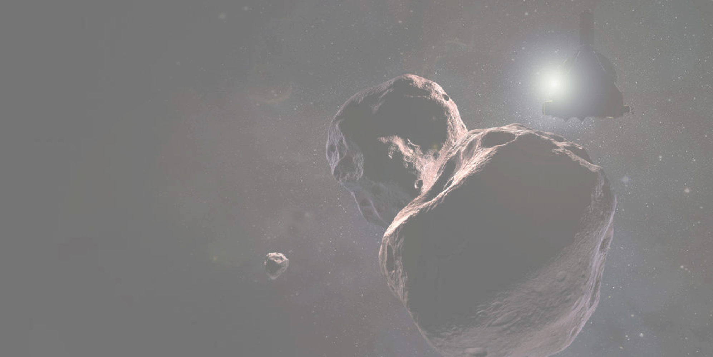

<!DOCTYPE html>
<html lang="en">
<head>
  <meta charset="utf-8">

  <!-- The viewport meta tag is important for correct responsive behavior on mobile devices. -->
  <meta name="viewport" content="width=device-width, initial-scale=1.0">

  <title>NASA</title>

  <!-- Do not edit the normalize.css file. More info: https://github.com/necolas/normalize.css/ -->
  <link href="css/normalize.css" rel="stylesheet">
  <link href="css/style.css" rel="stylesheet">
  <script src="js/orbitAnimation.js"></script>

</head>

<body>
  <!--div id="test">
  </div>
  <div id="test2">
  </div>
  <div id="test3">
  </div>
  <div id="test-alt">
  </div>
  <div id="test2-alt">
  </div>
  <div id="test3-alt">
  </div-->

  <div id="universe">
    <div class="galaxy">
      <!--div class="sun">
      </div-->
      <div id="satelliteTest" class="satellite">
      </div>
      <div id="satelliteTest-dummy" class="satellite">
      </div>
    </div>
  </div>

  <!--div id="universe">
    <div id="galaxy">

      <div id="navitem">Does New&nbsp;Horizons’ Next Target Have a&nbsp;Moon?</div>

      <div id="navitem--sub--1" class="orbit orbit-infinite">
        <div class="pos">
          <div class="subitem ">Dec&nbsp;12,&nbsp;2017</div>
        </div>
      </div>

      <div id="navitem--sub--2" class="orbit orbit-infinite">
        <div class="pos">
          <div class="subitem teaser">Scientists were already excited to learn this summer that New Horizons’ next flyby target – a Kuiper Belt object a billion miles past Pluto – might be either peanut-shaped or even two objects orbiting one another. Now new data hints that 2014 MU69 might have orbital company: a small moon.</div>
        </div>
      </div>

      <div id="navitem--sub--3" class="orbit orbit-infinite">
        <div class="pos">
          <div class="subitem">That’s the latest theory coming from NASA’s New Horizons team, as it continues to analyze telescope data on the target of a New Year’s Day 2019 flyby. “We really won’t know what MU69 looks like until we fly past it, or even gain a full understanding of it until after the encounter,” said New Horizons science team member Marc Buie, of the Southwest Research Institute, Boulder, Colorado, who offered an update on the analysis of MU69 Monday at the American Geophysical Union Fall Meeting in New Orleans. “But even from afar, the more we examine it, the more interesting and amazing this little world becomes.”</div>
        </div>
      </div>

      <div id="navitem--sub--4" class="orbit orbit-infinite">
        <div class="pos">
          <div class="subitem">The data that led to these hints at MU69’s nature were gathered over six weeks in June and July, when the team made three attempts to place telescopes in the narrow shadow of MU69 as it passed in front of a star. The most valuable recon came on July 17, when five telescopes deployed by the New Horizons team in Argentina were in the right place at the right time to catch this fleeting shadow — an event known as an occultation – and capture important data on MU69’s size, shape and orbit. That data raised the possibility that MU69 might be two like-sized objects, or what’s known as a binary.</div>
        </div>
      </div>
      <div id="navitem--sub--5" class="orbit orbit-infinite">
        <div class="pos">
          <div class="subitem"></div>
        </div>
      </div>

    </div>
  </div-->


  <script src="//ajax.googleapis.com/ajax/libs/jquery/1.8.1/jquery.min.js"></script>
  <script type="text/javascript" src="https://cdnjs.cloudflare.com/ajax/libs/prefixfree/1.0.7/prefixfree.min.js"></script>
<!--   <script src="solar.js"></script> -->
</body>

</html>
